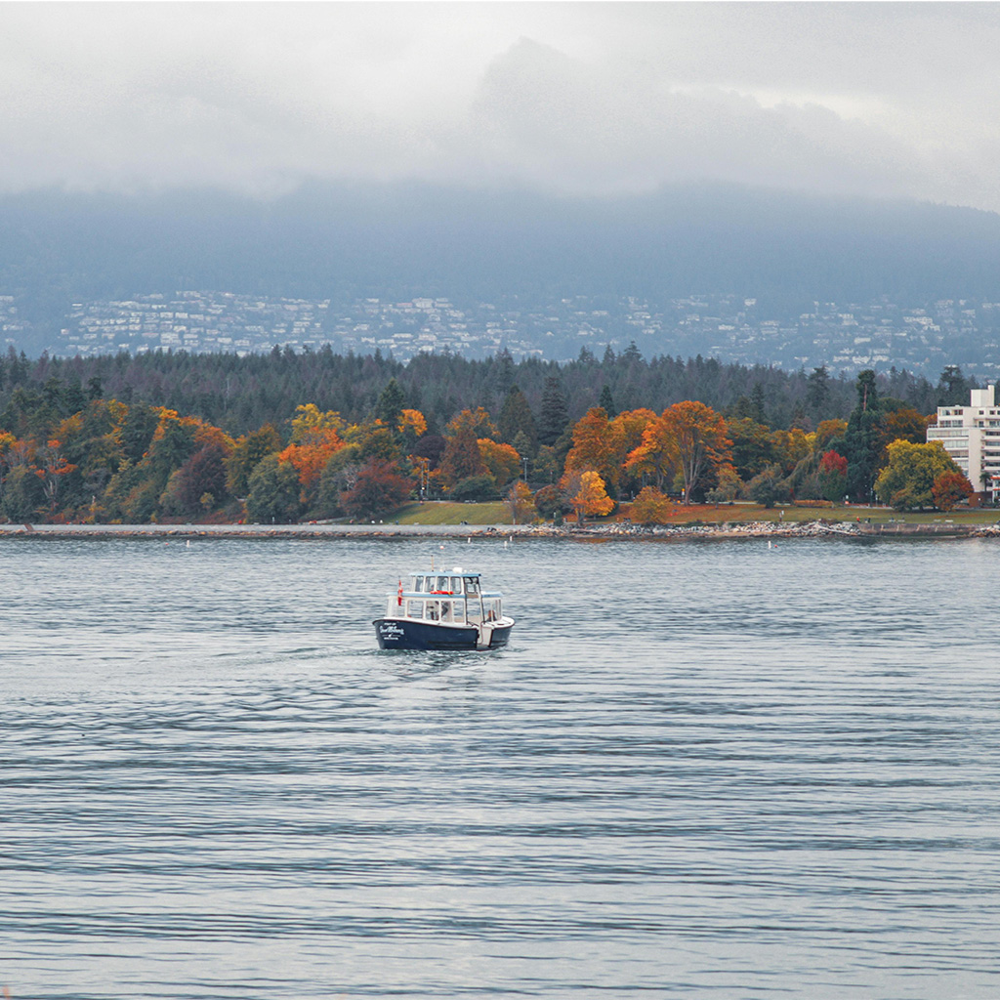
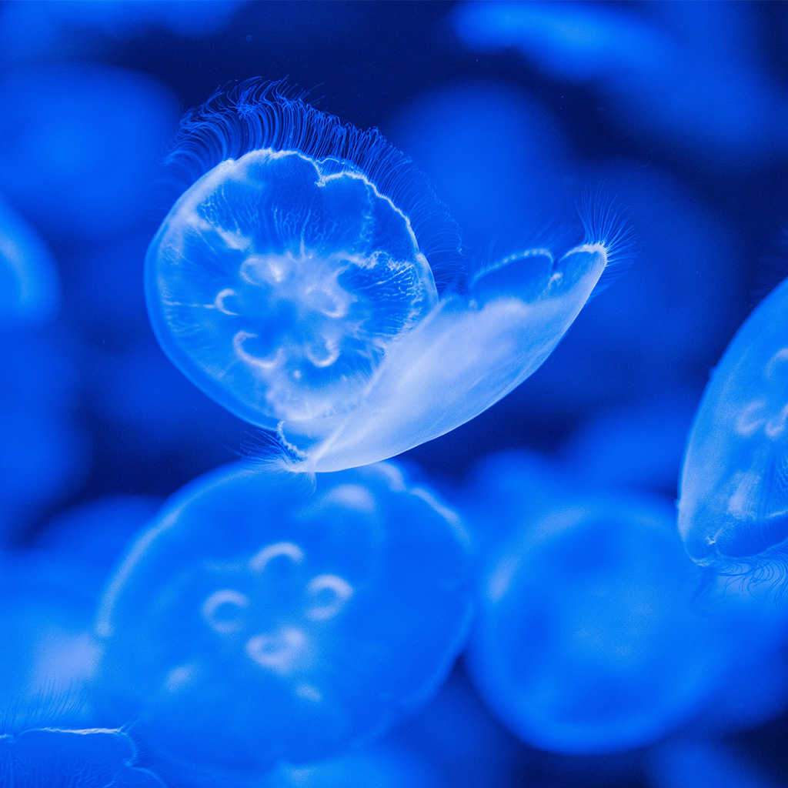
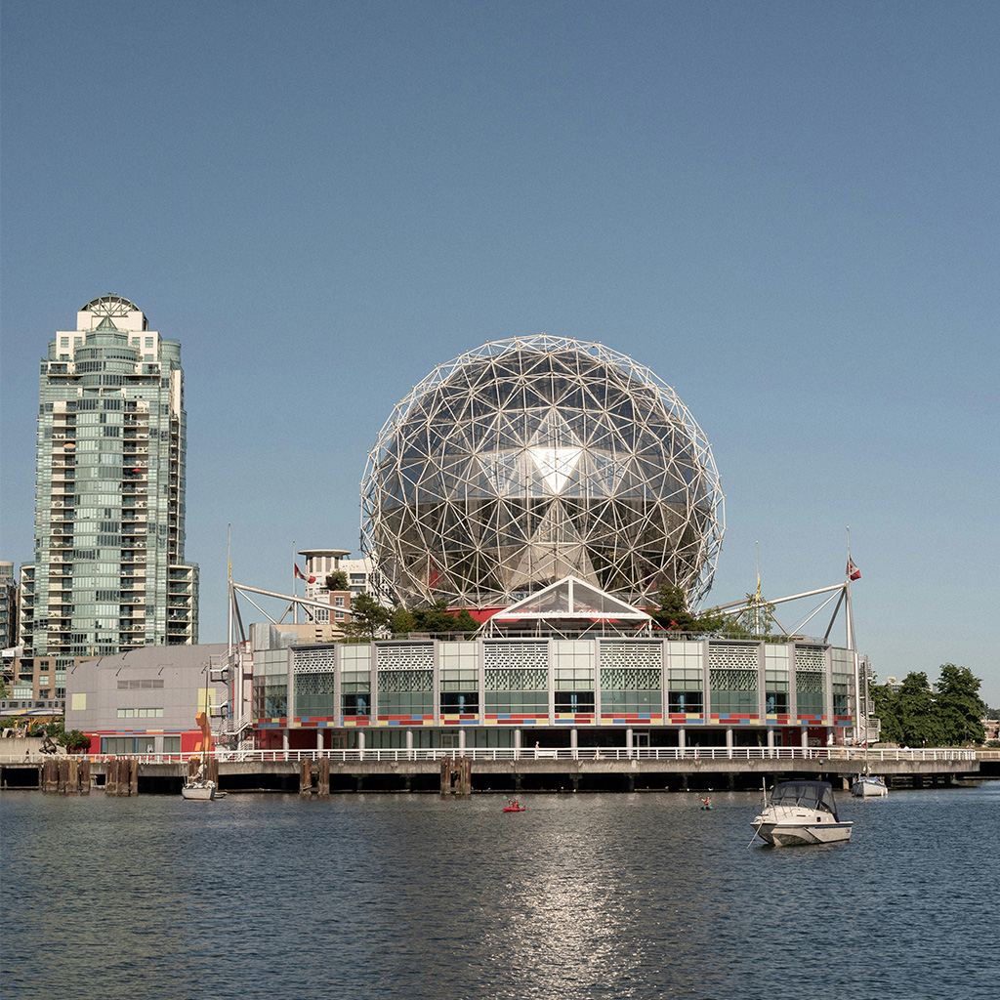

Stanley Park
Stanley Park is a 405-hectare (1,001-acre) public park in British Columbia, Canada, that makes up the northwestern half of Vancouver's Downtown peninsula, surrounded by waters of Burrard Inlet and English Bay. The park borders the neighbourhoods of West End and Coal Harbour to its southeast, and is connected to the North Shore via the Lions Gate Bridge. The historic lighthouse on Brockton Point marks the park's easternmost point. While it is not the largest urban park, Stanley Park is about one-fifth larger than New York City's 340-hectare (840-acre) Central Park and almost half the size of London's 960-hectare (2,360-acre) Richmond Park.

Vancouver Aquarium
The Vancouver Aquarium is a public aquarium located in Stanley Park in Vancouver, British Columbia, Canada. In addition to being a major tourist attraction for Vancouver, the aquarium is a centre for marine research, ocean literacy education, climate activism, conservation and marine animal rehabilitation.

Science World
Science World is a science centre run by a not-for-profit organization called ASTC Science World Society in Vancouver, British Columbia, Canada. It is located at the end of False Creek and features many permanent interactive exhibits and displays, as well as areas with varying topics throughout the years.